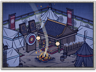
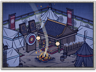

Requires
- Arts:

Enables
- Buildings:

 


Basic Building Statistics (can be modified by difficulty level, arts, skills, traits and retainers)
- Cost: 850
- -10% to the cost of recruiting land units in this province
- +10% to the replenishment rate in this province
Description
There must be a first step in every march.
All warriors need somewhere to be gathered during recruitment, and somewhere to live whilst they are being trained. An encampment can have the air of a permanent military town, with bustle and apparent confusion all around. It does, however, make it easier and cheaper to recruit new units and organise regular drafts of replacements for existing units. Encampments had to be well organised, otherwise so many people in close proximity to each other would not stay healthy for long. The discipline of camp life had a secondary benefit - it was always wise for rulers to keep their fighting men separate from troublesome civilians. Apart from anything else, civilians have at least one awkward idea: they like to make a profit from bored soldiers through drink, women and gambling. Most soldiers are entirely happy to go along with these schemes, but discipline can suffer as a result. During the Sengoku Jidai, the number of ashigaru in all armies grew (no clan dared be left behind with a numerically small army) but recruiting commoners meant an inevitable departure from the high disciplinary standards of the samurai, with their code of bushido.